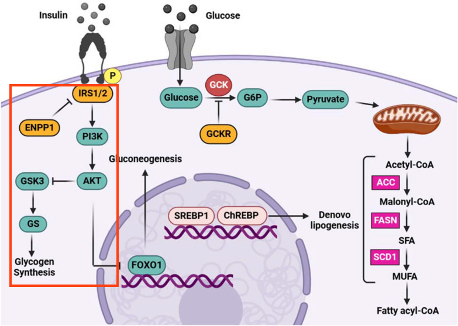

Background
The phosphorylation of IRS stimulates activation of downstream PI3K/Akt cascade, which leads to several downstream effects.
Your Mission
Draw the part of the pathway outlined in red below:

- Add a mim-inhibition arrow from ENPP1 to IRS1/IRS2 group.
- Add nodes for the PI3K complex: PIK3R1, PIK3R2 and PIK3CA, PIK3CB and PIK3CD. Group the nodes and make it a complex.
- Group the three AKT nodes, the two GSK3 nodes.
- Add nodes for glycogen synthase (GS); GYS1, GYS2 and then group them.
- Add a pathway node for Glycogen Synthesis, and annotate it manually using "WP500" as the identifier and "WikiPathways" as the database.
- A pathway node is by default of Shape Type "None". Update the Shape Type to "RoundedRectangle" for the “Glycogen Synthesis” node.
- Connect the nodes using the arrow interaction or mim-interaction, and arrange the nodes according to the figure.
- Save your work as a GPML file under File > Save As.
- Drag-and-drop the GPML file below to check if it is correct.